Phones out · before we start
Pick one. Bring it to class.
Scan the one you want. Tap the yellow button. Put it on the floor, on your desk, next to your friend.
USC Annenberg · Week 14 · guest lecture
What's nextvisual
VR, AR, 360°, drones, GoPro, volumetric capture and Gaussian splats. And the question under all of them: who gets to hold the camera?
This deck, on your phone Every slide, every link, live with us.
Hi, I'm Rogério
From a farm in CearáXR in Los Angeles.
1 Grew up in rural Santa Quitéria, Brazil: third of six kids of farmers, first in my family to go to college.
2 B.A. in Journalism (Federal University of Ceará). Ran communication for 350,000+ public school students and a 50-teen youth newsroom at the G20.
3 Now: M.A. Narrative & Emerging Media at ASU, with Prof. Nonny de la Peña. VR, volumetric capture, Gaussian splats.
"What separates me from many young people in my community isn't capability. It's access."
Santa Quitéria, Ceará Water yes, uranium no 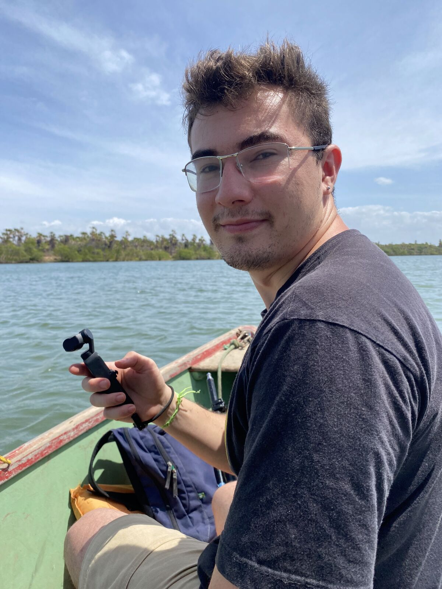
Field work, Ceará 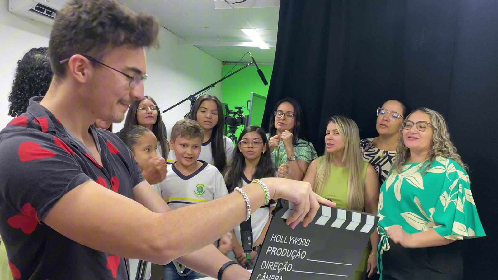
Youth newsroom
Dynamic 01 · guess the term
What do you think it is?
Shout your guess first. Then we flip.
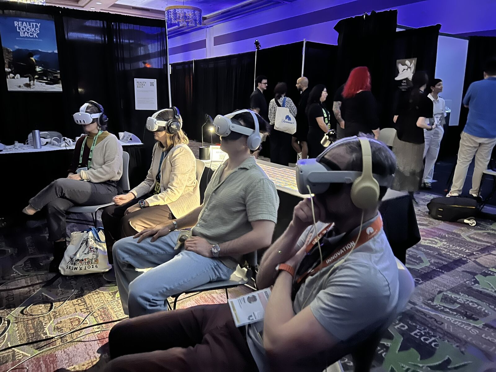
01
360° video guess → flip
You look around
A sphere of video. Look anywhere, but you can't move.
Seen in NYT "The Daily 360": a 360° news video every day (2016)
TechCrunch ↗ 02
AR guess → flip
Augmented reality
Digital layers on your real space. The story lands on your table.
Seen in NYT put life-size Olympic athletes in readers' living rooms (2018)
Nieman Lab ↗ 03
VR guess → flip
Virtual reality
A headset replaces your world. You can stand inside the scene.
Seen in The Guardian's "6x9": nine minutes in a solitary confinement cell (2016)
Watch ↗ 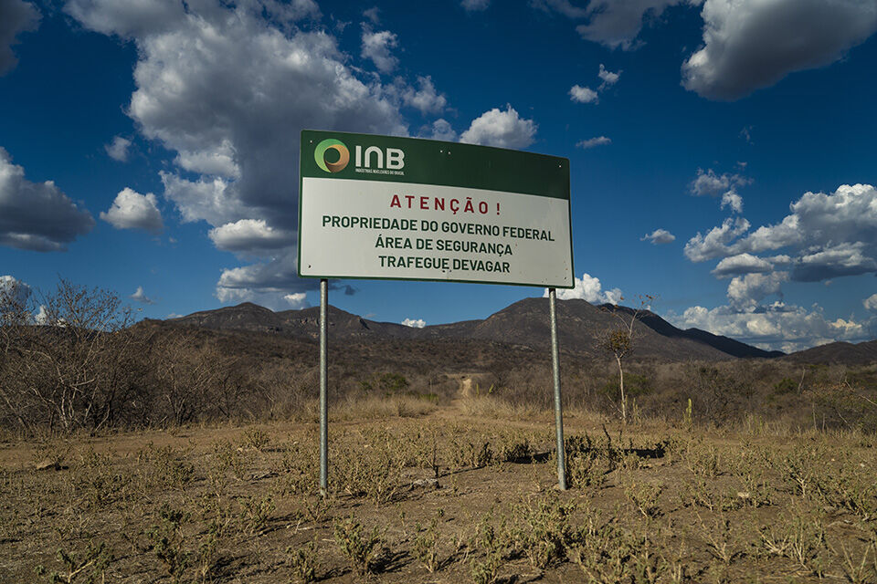
04
Drone guess → flip
Aerial reporting
The view that shows scale. In the US: FAA Part 107 to fly for work.
Seen in BBC drone footage showed the scale of destruction in Ukraine (2022)
Nieman Lab ↗ 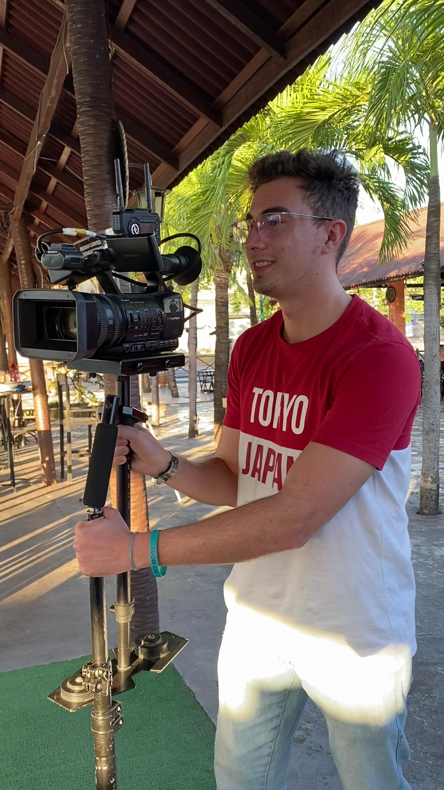
05
GoPro / POV guess → flip
Point of view
A small camera on a body. The audience rides with the source.
Seen in In Mosul, a journalist's chest GoPro stopped a sniper's bullet (2017)
Digital Trends ↗ 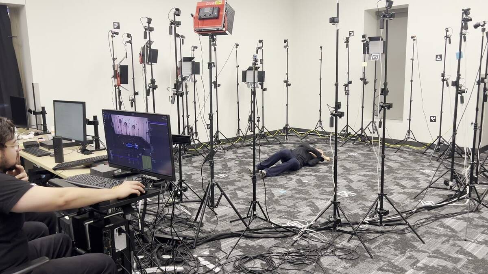
06
Volumetric capture guess → flip
A person in 3D
100+ cameras record a person as 3D video. Walk around them.
Seen in NYT "Ashley Graham: Unfiltered", its first volumetric AR story (2018)
Microsoft ↗ 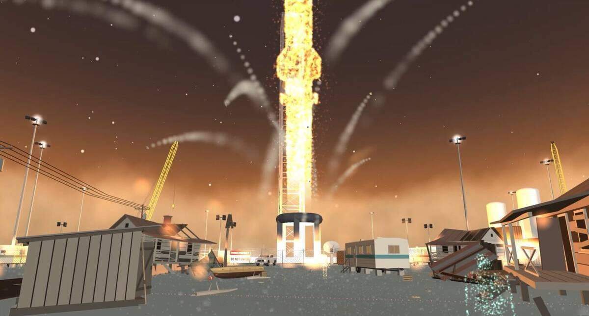
07
Gaussian splat guess → flip
A place from photos
Soft 3D "blobs" rebuilt from photos. A phone makes one in minutes.
Seen in NZZ rebuilt a closed asylum camp on Samos from drone and residents' phone video
How they did it ↗ 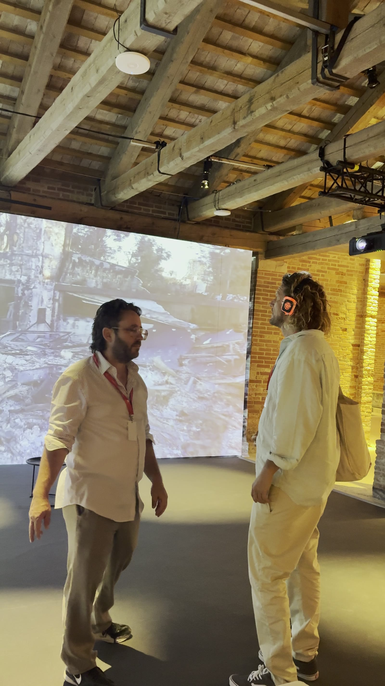
08
Presence guess → flip
The goal
The feeling of really being there. A superpower, and an ethical risk.
Seen in Stanford: after "Becoming Homeless" in VR, 82% signed a petition vs 67% after reading (2018)
The study ↗
From wonder to storytelling · a short history
The tech changes.The story is what moves us.
1838
Stereoscope · Charles Wheatstone Two images, one per eye. Every VR headset still works this way.
Stereoscope 1896
Arrival of a Train · Lumière Legend says the audience ran. Why do we keep telling that story?
The film and the myth 2012
Snow Fall · The New York Times The web learned to scroll like a film. 2013 Pulitzer.
Snow Fall 2015
The Displaced · Clouds Over Sidra 1M+ Cardboards to NYT readers. The UN puts you in a refugee camp.
The Displaced
2026
Out of the Ashes · and now Special Jury Prize, Venice. Today: splats on your phone.
Venice awards
Every new medium arrives wrapped in fear and wonder. What lasts is the story.
The toolbox · format follows the question
Every format answersjournalistic question.
Case 01 · Out of the Ashes · Rory Mitchell & Nonny de la Peña
The LA fires,3D.
Fire-scarred homes in photogrammetry, survivors in volumetric capture. I worked on the capture and was the project's official content creator, from LA to the Venice Biennale.
Special Jury Prize · Venice 2026
Special Jury Prize
Venice Immersive 2026
300+
visitors I guided at the Music Center, Jan 2026
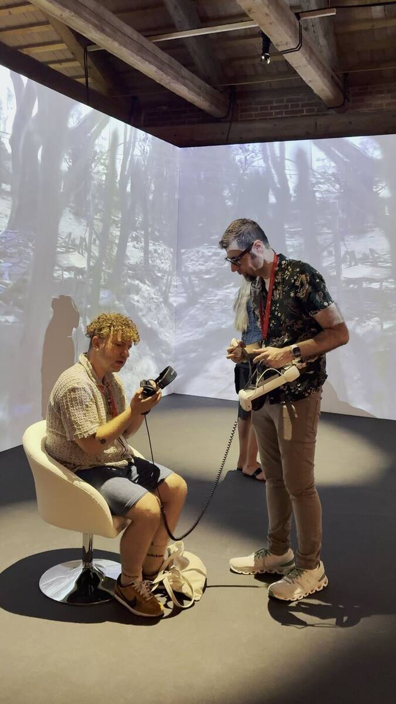
Venice 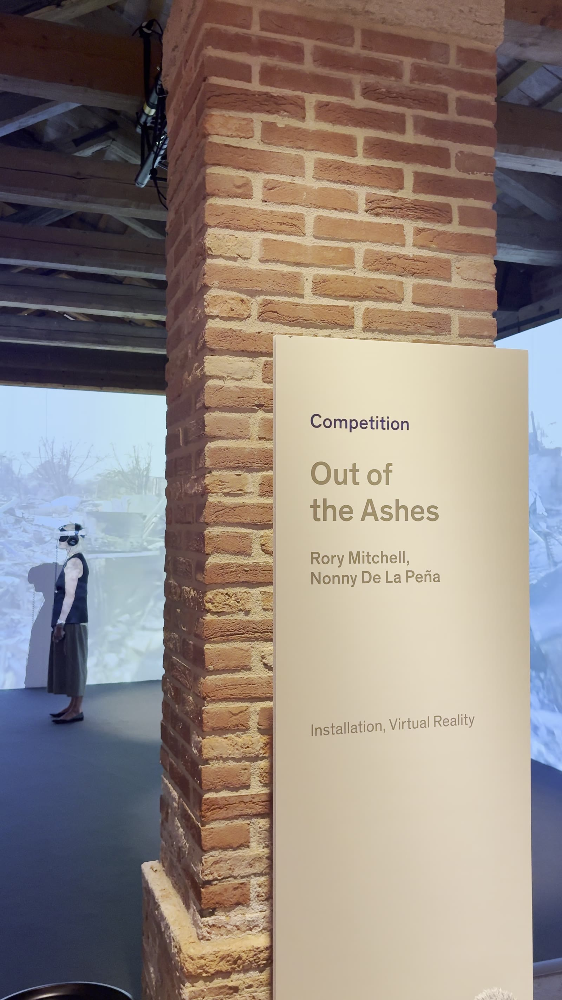
Competition Capture Volumetric rig
Case 02 · my capstone · The Sound of a Sacrifice Zone
Arrive as an intruder. ally.
A room-scale VR documentary about Boca Chica, Texas and Playa Bagdad, Mexico, where SpaceX's Starship program meets a border community and a fragile coastline. Co-created with local voices.
The portal
A real fence "SPACEX PRIVATE PROPERTY. DO NOT ENTER." In the piece, the fence is the door between chapters.
The mechanic
The Embodied Edit The rocket's roar swallows the community's voices. If you choose to pay attention, you hear them again.
The method
Social cartography The official closure perimeter erases the community's map. Their voices draw it back.
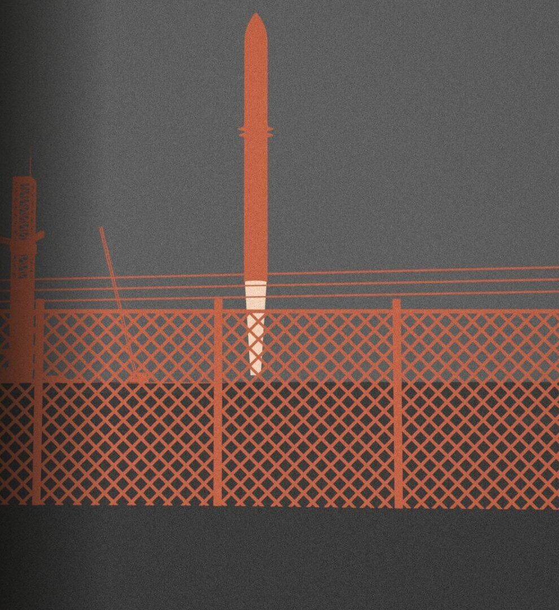
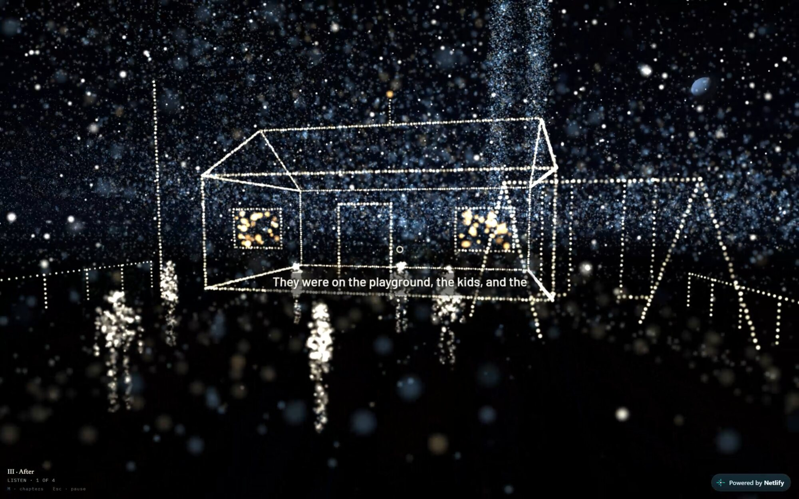
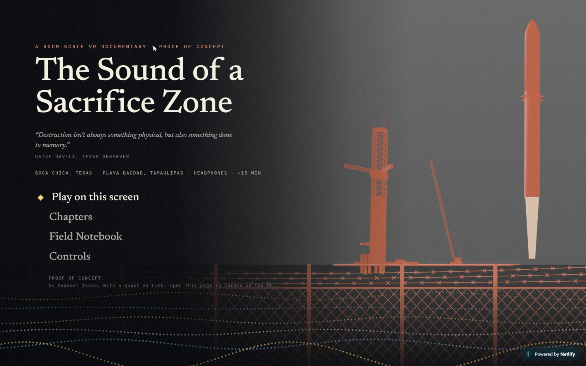
Work in progress · what I'm building now
Developing work.
In production · room-scale VR doc
The Sound of a Sacrifice Zone Boca Chica, Texas and Playa Bagdad, Mexico. Co-created with local voices. My ASU capstone.
I hold it true, whate'er befall
WebXR · 16 chapters · Quest, phone, desktop
We Are Born Remembering, But We Learn to Forget A newborn remembers every life it has lived, and knows exactly what to say. Every attempt comes out as a cry.
USC Immersive Media Hackathon · Nov 2026
The math of making ends meet
Capital & Main · solutions journalism
High Costs, Low Wages California workers tell their own stories: what a month costs, what a paycheck covers, and how they push back.
Harvard & MIT · communications lead
Brazil Conference Organizer for general communications and digital marketing, 2025-26.
6.2M views in 7 months
WebXR · splats + 360°
Pages of Prophecy A family's exile story, co-built with director Noelle Muluneh.
In development
Your story here
Next · with you
Bring me your stories. Let's build them together. rogeriobie2016@gmail.com
Real projects · one minute each
Don't just watch it. Feel it.
2015 · UN · 360° VR
Clouds Over Sidra Gabo Arora, Chris Milk, Barry Pousman (Vrse)
A day with Sidra, a girl in a Syrian refugee camp. The UN used its VR films to raise money.
UN data: viewers donated at 1 in 6, up from 1 in 12
Fortune 2016 · VR · sound
Notes on Blindness Colinart, La Burthe, Middleton, Spinney (ARTE, Ex Nihilo)
Built from John Hull's audio diaries as he lost his sight. You learn to really listen.
Tribeca Storyscapes Award 2016
Notes on Blindness 2015 · NYT VR
The Displaced Imraan Ismail & Ben Solomon, for The New York Times
The Times' first VR film: lives uprooted by war. Shipped with 1M+ Cardboards.
Entertainment Lions Grand Prix, Cannes Lions 2016
The Displaced 2012 · VR · Sundance
Hunger in Los Angeles Nonny de la Peña, with USC's Mixed Reality Lab
A real event: a man collapses in a food-bank line. You stand there as a witness. Made right here, at USC.
Premiered at Sundance 2012
Nonny de la Peña · TED 2017 · brand · AR
IKEA Place IKEA · AR app on your phone
See how the furniture looks in your own room before you buy it. Advertising learned this before newsrooms did.
D&AD Wood Pencil 2018, Digital Design
D&AD
USC Annenberg · Content Creators Academy 2026
Journalists arecreators.
Your audience lives on a phone. What I learned this summer, in this building:
1 Write the headline first Then build the piece from it. (Thank you, Eric.)
2 Engage, then explain Hook in the first second, verbally and on screen. Deliver the promise right away.
3 Always check your audio Mic to the speaker, human or not. Bad audio kills good images.
4 Find your niche, then a series Mine: immersive media helping communities rebuild after climate disasters.
Beyond the newsroom · the market is already here
Studios
Felix & Paul shot on the ISS: 2021 Emmy. Atlas V : Gloomy Eyes. Vision Pro : live Lakers games.
Atlas V Emmy Metallica How it reaches people
Festivals → stores (Quest, Vision Pro) → touring shows . The Infinite: 500,000+ visitors.
DocLab (on now) The Infinite
The tech is cheap and everywhere. People who can tell a real story with it are rare. That's you.
The real question · designing for the pluriverse
The future isn't a device.who holds it.
1989, Altamira, Brazil. Journalists came to film "the Indians" protesting a dam. The Kayapó were already filming them . The dam was stopped (for decades).
REC
lens held by: outsiders
Displayed by others: a Kayapó figure in a museum case.
Kayapó filmmakers shooting their own story, 2023.
tap to flip who holds the camera
Arturo Escobar
Design designs back What we design ends up designing us. Autonomous design: communities designing their own worlds.
Designs for the Pluriverse Ailton Krenak
Tell one more story To postpone the end of the world, keep telling stories. The river is a relative, not a resource.
Krenak in his own words Malcolm Gladwell
The Tipping Point A few connectors, one sticky image, the right moment. That's how a small world tips a big one.
The Tipping Point
The tipping point · how a small world tips a big one
A few connectors.sticky idea.
Tap a node. Watch an idea move through the room. Then tap a connector (the big ones) and see the difference.
Moviement: The Innovative Process · The Quasar Lab
Watch later Scan to open the video.
Ethics · vote with your hands
Real, reconstructed,not yours?
A survivor recorded in a volumetric studio, telling her own story.
Real Reconstructed Not yours
Real, but staged. It's her voice and her body, in a studio, not her home. Tell the audience where and how it was captured.
A 3D scene generated from ONE family photo from the 1970s.
Real Reconstructed Not yours
Reconstructed. The AI invented everything the photo didn't show. Label it as a reconstruction, every time.
Rocket audio from a TV broadcast, in your public VR piece.
Real Reconstructed Not yours
Real, and not yours. No license, no public release. A reference track for a prototype can never ship.
An AI voice of a community member reading their own testimony.
Real Reconstructed Not yours
Synthetic. Only with explicit consent, and disclosed on screen. Otherwise it's a deepfake, even with good intentions.
Tap each card to reveal. Presence makes people believe. That's exactly why we owe them the label.
Dynamic 02 · remix your final project
Pick one moment.immersive.
In your group, take ONE moment from your final video and redesign it with one tool from today.
1
The format 360, drone, AR, VR, volumetric or splat. Which question does it answer for your story?
2
The feeling What will the audience feel that a flat video can't give them?
3
The camera Who holds it? What must you disclose: real, reconstructed or not yours?
Quick quiz · 4 teams, 20 seconds each
Start timer Reveal Next question →
Starter guide · your next steps
You don't need permissionstart.
Free tracker XR, games & funding calls 2026-27. Make a copy.
A lot of people use this tech just because it's new. What's missing is good stories. That's your superpower as journalists. Bring me your stories. Let's build them together.
Team up rogeriobie2016@gmail.com
Dates checked on official pages on Nov 17, 2026. Always confirm before you apply.
Thank you · let's keep in touch
Hold the camera.
The next big story in visual journalism might come from a place nobody is filming yet. Maybe yours.
Rogério Bié Portfolio, every link from today, and how to reach me.rogeriobie2016@gmail.com
10
All together · phones up Tap Hold the camera . Every lens in this room points the same way. When the count hits zero, every screen lights up at once.
Hold the camera Light the room Rogério Bié · Los Angeles
Hands-on · optional
Don't watch it. Walk into it.
Spatial portfolio · WebXR
Walk through my work Each gate opens its own world.
open
AR · documentation
Armstrong's spacesuit A Smithsonian scan, life size, on your floor.
open
Gaussian splat · LA fires
Walk a burned street Captured by the ASU team after the 2025 fires. ASU News ↗
open
WebXR · explainer
Quasar Flight Science explained by flying it. Tilt your phone, it follows your gyro.
open


 open
open watch
watch open
open open
open